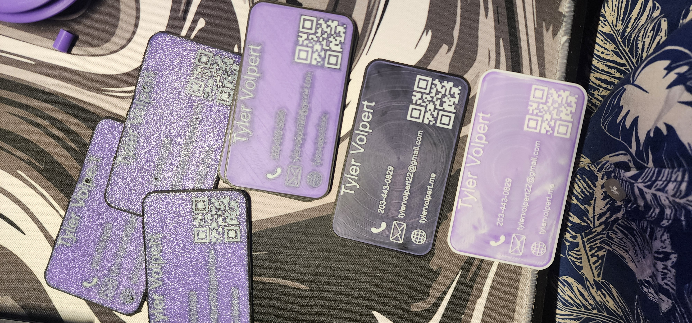

3D Printed Business Cards
July 2025

It wouldn't necessarily make sense to make my own website without having a way to tell people about it. So, I figured I would make myself a business card.
I made the layout of the card using Adobe Illustrator, then imported it into SOLIDWORKS and turned it into a printable object.
Extra pictures from the design process
